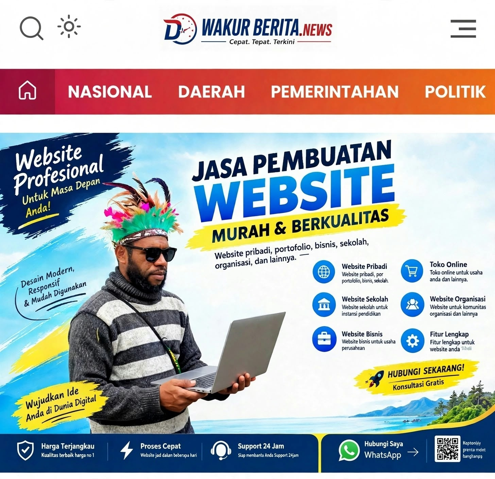

PAPUA PEGUNUNGAN 2026 - DARI WAMENA UNTUK INDONESIA
Pendiri: Jitemuli Wakur, S.Kom | HP: 082211281451

WAMENA, 7 Okt 2026 | Penulis: Jite Muli
Saya Jitemuli Wakur, S.Kom, putra asli dari Provinsi Papua Pegunungan. Saya hanya anak dari kaki gunung dan pinggiran sungai di Wamena. Tulisan ini bukan untuk membanggakan diri, tetapi sebagai ucapan syukur karena Tuhan begitu baik dalam hidup saya.
Perjalanan saya sampai bisa membuat website WAKUR BERITA ini tidak sendiri. Ada seorang guru yang dengan tulus mengajari, membimbing, dan meyakinkan saya bahwa anak Wamena juga bisa berkarya di dunia teknologi. Terima kasih untuk guru saya, Tuhan berkati selalu.
Website WAKUR BERITA - PAPUA PEGUNUNGAN 2026 - Dari Wamena ini saya buat dengan satu tujuan besar: Kami, anak-anak Wamena, ingin membuktikan bahwa kami bisa mengembangkan dan meningkatkan kinerja Forum Papua melalui karya digital.
Menjadi portal berita independen, terpercaya, dan menjadi wadah aspirasi utama yang mengangkat potensi, budaya, dan perkembangan pembangunan dari Provinsi Papua Pegunungan untuk Indonesia dan dunia.
Hormat saya,
Jitemuli Wakur, S.Kom
Pendiri WAKUR BERITA